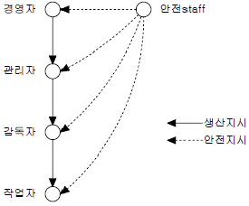
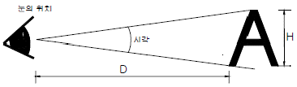
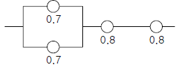
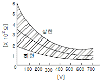
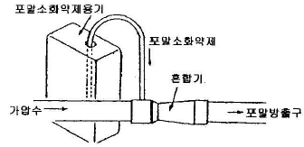
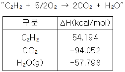

산업안전기사 (2005-03-06 기출문제)
1과목: 안전관리론
1. 조건반사설에 의한 학습이론의 원리가 아닌 것은?
- 준비성의 원리
- 일관성의 원리
- 계속성의 원리
- 강도의 원리
(정답률: 49%)

2. 무재해 운동을 추진하고 정착하기 위해서 우선적으로 선결되어야 할 것은?
- 교육을 통한 참여 및 실천하는 근로자의 자세
- 인간존중의 본심에 우러나오는 경영자의 자세, 방침
- 산업현장 실정에 적합한 추진기법을 개발하는 재해 예방단체의 자세
- 자율적으로 참여할 수 있는 방안을 강구하는 정부의 자세
(정답률: 60%)
3. 다음 중 인간 행동의 변화에 소요되는 시간이 가장 많이 걸리고, 가장 어려운 것은 어느 것인가?
- 개인행동의 변화
- 태도의 변화
- 지식의 변화
- 집단행동의 변화
(정답률: 62%)
4. 안전조직 형태를 설명한 것이다. 알맞게 이어놓은 것은?
- 명령과 보고관계 간단명료한 조직 - Line형
- 경영자의 조언과 자문역할을 한다 - Line형
- 명령자 조언권고가 혼동되기 쉬운 조직 - Staff형
- 생산부분은 안전에 대한 책임과 권한이 없다 -Line and Staff형
(정답률: 77%)
5. 리더십(Leadership)을 정의한 것 가운데 잘못 정의 한 것은?
- 집단목표를 위해 스스로 노력하도록 사람에게 영향력을 행사한 활동
- 어떤 특정한 목표달성을 지향하고 있는 상황하에서 행사되는 대인간의 영향력
- 공통된 목표달성을 지향하도록 사람에게 영향을 미치는 것
- 주어진 상황 속에서 목표 달성을 위해 개인활동에만 영향을 미치는 과정
(정답률: 82%)
6. 작업현장에서 소정의 작업용구를 사용하지 않고 근처의 용구를 사용해서 임시 변통하는 인간심리 결함행위에 해당하는 것은?
- 무의식적 행동
- 지름길 반응
- 억측판단
- 생략행위
(정답률: 38%)
7. Herzberg의 일을 통한 동기부여 원칙 중 잘못된 것은?
- 무에 따라 자유와 권한
- 교육을 통한 간접적 정보제공
- 개인적 책임이나 책무를 증가시킴
- 더욱 새롭고 어려운 업무수행 하도록 과업 부여
(정답률: 50%)
8. 재해 사례 연구 순서가 올바르게 나열된 것은?
- 재해상황 파악 - 문제점 발견 - 사실확인 - 근본 문제점 결정 - 대책수립
- 문제점 발견 - 재해상황 파악 - 사실확인 - 근본 문제점 결정 - 대책수립
- 재해상황 파악 - 사실확인 - 문제점 발견 - 근본 문제점 결정 - 대책수립
- 문제점 발견 - 재해상황 파악 - 대책수립 - 근본 문제점 결정 - 사실확인
(정답률: 62%)
9. 안전하고 능률적인 생산을 위한 설계를 할 때, 일반적으로 공장의 경영자가 따라야 할 원칙 중 틀린 것은?
- 재료와 자재의 취급을 최대화해야 한다.
- 기계나 설비에 적당한 간격을 두어야 한다.
- 안전한 운송장비를 제공해야 한다.
- 화재시 적당한 대피수단을 제공해야 한다.
(정답률: 82%)
10. 안전관리의 4M 가운데 Media에 해당하지 않는 것은?
- 작업정보
- 작업방법
- 작업환경
- 통로안전
(정답률: 73%)
11. 안전교육의 4단계법을 순서대로 연결한 것 중 옳은 것은?
- 제시 - 적용 - 준비 - 확인
- 적용 - 준비 - 확인 - 제시
- 준비 - 제시 - 적용 - 확인
- 확인 - 준비 - 제시 - 적용
(정답률: 77%)
12. 다음 중 가스, 증기, 공기 중에 부유하고 미립자상물질 또는 산소결핍 공기를 흡입함으로서 발생할 수 있는 근로자 건강장해의 예방을 위해 사용하는 마스크에 해당하는 것은?
- 방진마스크
- 송기마스크
- 방독마스크
- 흡수관마스크
(정답률: 60%)
13. 안전조직형은 어떤 형태의 조직인가?

- 라인형
- 스태프형
- 라인형과 스태프 혼합형
- 기본형
(정답률: 64%)
14. 다음 중 Y이론에 대한 설명에 적합하지 않은 것은?
- 작업에서 몸과 마음을 구사하는 것은 인간의 본성이라는 인간관
- 인간은 명령되는 쪽을 좋아하며 무엇보다 안전을 바라고 있다라는 인간관
- 인간은 조건에 따라 자발적으로 책임을 지려고 한다는 인간관
- 매슬로우의 욕구체계 중 자기실현의 욕구에 해당한다.
(정답률: 59%)
15. 동작 경제의 원칙 중 작업량 절약의 원칙이 아닌 것은?
- 적게 운동한다.
- 동작의 수를 줄일 것
- 재료나 공구는 취급하는 부근에 정돈할 것
- 동작이 자동적으로 리드미컬한 순서로 할 것
(정답률: 37%)
16. 연평균 600명의 근로자가 작업하는 사업장에서 연간 45명의 재해자가 발생하였다. 만약 이 사업장에서 한 작업자가 평생동안 작업을 한다면 약 몇 건 미만의 재해를 당하겠는가? (단, 1인당 평생근로시간은 100000시간으로 할 것)
- 1건
- 4건
- 7건
- 10건
(정답률: 50%)
17. 다음 동기부여 욕구에 속하지 않는 것은?
- 책임
- 성취
- 인정
- 안전
(정답률: 59%)
18. 토의식 교육지도에서 가장 시간이 많이 소비되는 항목은?
- 도입
- 제시
- 적용
- 확인
(정답률: 45%)
19. 먼저 실시한 학습이 뒤의 학습을 방해하는 조건이 아닌 것은?
- 앞의 학습이 불완전한 경우
- 앞의 학습 내용과 뒤의 학습내용이 다른 경우
- 뒤의 학습을 앞의 학습 직후에 실시하는 경우
- 앞의 학습에 대한 내용을 재생(再生)하기 직전에 실시 하는 경우
(정답률: 43%)
20. 위험 예지 훈련을 실시할 때 현상 파악이나 대책수립시 원칙에 어긋나는 것은?
- 자유 자재로 변하는 아이디어를 개발한다.
- 아이디어의 수는 하찮은 것일지라도 많을수록 좋다.
- 개발한 아이디어에 대해서는 절대로 비판을 하지 않는다.
- 개발한 아이디어를 힌트로 연결하여 다른 아이디어를 개발하지 않는다.
(정답률: 80%)
2과목: 인간공학 및 시스템안전공학
21. 다음 중 동작경제의 원칙이 아닌 것은?
- 동작개선의 원칙
- 동작량 절약의 원칙
- 동작능력 활용의 원칙
- 동작순환의 원칙
(정답률: 33%)
22. 다음 그림과 같은 상황에서 시각(visual angle)은 얼마 인가? (단, D:71cm, H:1cm 이다)

- 48.42도
- 48.42분
- 4.842분
- 4.842도
(정답률: 38%)
23. 다음 FMEA의 특징을 설명한 것 중 틀린 것은?
- 동시 다발로 발생하는 고장의 경우에도 해석이 가능 하다.
- 비전문가도 짧은 훈련으로 사용할 수 있다.
- Human Error의 검출이 어렵다.
- 서브시스템의 분석 경우 FMEA보다 FTA를 하는 것이 더 실제적인 방법이다.
(정답률: 41%)
24. 다음 시스템의 신뢰도는 얼마인가?

- 0.5824
- 0.6682
- 0.7855
- 0.8642
(정답률: 62%)
25. 다음 중 근골격계질환의 발생원인과 가장 거리가 먼 것은?
- 반복적인 동작
- 부적절한 작업자세
- 진동 및 온도
- 잘못 설계된 계기판
(정답률: 74%)
26. 인간과 기계(환경) 계면에서의 인간과 기계와의 조화성은 3가지 차원에서 고려되는데 그 3가지에 해당하지 않는 것은?
- 신체적 조화성
- 지적 조화성
- 감성적 조화성
- 감각적 조화성
(정답률: 37%)
27. 주어진 자극에 대해 인간이 갖는 변화감지역을 표현하는 데에는 Weber의 법칙을 이용한다. 이 때 Weber비와 인간의 분별력과의 관계를 설명한 것은?
- Weber비가 클수록 분별력이 좋다.
- Weber비가 작을수록 분별력이 좋다.
- Weber비와 분별력과는 관계가 없다.
- Weber비는 모든 사람에 대해 일정하다.
(정답률: 48%)
28. 인간의 기억체계 가운데 정보가 잠깐 지속되었다가 정보의 코드화 없이 원래상태로 되돌아가는 것은?
- 감각저장
- 작업기억
- 단기기억
- 장기기억
(정답률: 28%)
29. 각 기본사상의 발생확률이 증감하는 경우 정상사상의 발생 확률에 어느 정도 영향을 미치는가를 반영하는 지표로서 수리적으로는 편미분계수와 같은 의미를 갖는 FTA의 중요도 지수는?
- 구조 중요도
- 확률 중요도
- 치명 중요도
- Barlows 중요도
(정답률: 54%)
30. 표준 회색의 빛의 반사율은 어느 정도인가?
- 10%
- 20%
- 30%
- 40%
(정답률: 41%)
31. 각각 1.2×104의 수명을 가진 요소 4개가 병렬계를 이룰 때의 계의 수명은?
- 3×103 시간
- 1.2×104 시간
- 2.5×104 시간
- 4.8×104 시간
(정답률: 34%)
32. 입력현상 중에서 어떤 현상이 다른 현상보다 먼저 일어난 때에 출력현상이 생기는 수정 게이트는?
- AND게이트
- 우선적 AND게이트
- 조합 AND게이트
- 배타적 OR게이트
(정답률: 68%)
33. 시스템이 복잡해지면, 확률론적인 분석기법만으로는 분석이 곤란하여 computer simulation을 이용한다. 이 기법은 어떤 기법에 근거를 두고 있는가?
- 미분방정식 기법
- 적분방정식 기법
- 차분방정식 기법
- Monte carlo 기법
(정답률: 46%)
34. 제품 Life Cycle 단계에서 시스템안전의 실증과 검사를 하는 단계는?
- 기획/구상단계
- 설계단계
- 제조 및 생산단계
- 운영단계
(정답률: 48%)
35. 다음 중 layout의 원칙인 것은?
- 운반작업을 수작업화 한다.
- 중간 중간에 중복부분을 만든다.
- 인간이나 기계의 흐름을 라인화 한다.
- 사람이나 물건의 이동거리를 단축하기 위해 기계배치를 분산화 한다.
(정답률: 58%)
36. 다음 색상 중에서 조직 호흡면에서 산화작용(酸化作用)을 촉진시키는 것은?
- 적색
- 황색
- 청색
- 백색
(정답률: 29%)
37. 산업안전표지로서 경고표지는 삼각형, 안내표지는 사각형 지시표지는 원형 등으로 부호가 고안되어 있다. 이처럼 부호가 이미 고안되어 있으므로 이를 배워야 하는 부호는?
- 묘사적 부호
- 추상적 부호
- 임의적 부호
- 사실적 부호
(정답률: 56%)
38. 시스템의 고장을 분석하는 데에는 고장밀도함수 f(t)보다 고장률 함수 h(t)가 더 중요한 의미를 갖는다. 고장률 함수 h(t)를 바르게 표시한 것은? (단, R(t)는 신뢰도함수, F(t)는 불신뢰도 함수를 의미)
- f(t)/R(t)
- dR(t)/dt
- f(t)/F(t)
- dF(t)/dt
(정답률: 40%)
39. 특정조합의 기본사상들이 동시에 결함을 발생하였을 때 시스템의 고장 사상을 일으키는 기본 사상의 집합을 무엇이라 하는가?
- Cut sets
- Path sets
- Minimal cut sets
- Minimal path sets
(정답률: 59%)
40. 다음 중 위험(Risk)의 개념을 정량적으로 나타내기 위하여 채택되고 있는 정의는 어느 것인가?
- 사고발생 빈도 × 손실
- 사고발생 빈도 × 안전장치
- 손실 ÷ 사고발생빈도
- 사고발생 빈도 ÷ 안전장치
(정답률: 61%)
3과목: 기계위험방지기술
41. 기계 대패로 나무가공을 하고 있을 때 대패날은 작업자에 대하여 어느 방향이 좋은가?
- 30°방향
- 45°방향
- 같은 방향
- 반대방향
(정답률: 59%)
42. 선반의 안전장치로 볼 수 없는 것은?
- 실드(Shield)
- 칩브레이커
- 방진구
- 브레이크
(정답률: 39%)
43. 볼트에 전단력이 작용하는 곳에 억지로 끼워 맞춤이 되도록 볼트 구멍을 리머로 다듬질 작업 후 사용하는 볼트는?
- 리머볼트
- 아이볼트
- 고리볼트
- 나비볼트
(정답률: 66%)
44. 밀링작업에서 주의해야 할 사항으로 옳지 않은 것은?
- 보안경을 쓴다.
- 절삭 중 치수를 측정한다.
- 커터에 옷이 감기기 않게 한다.
- 정지한 상태에서 일감을 고정한다.
(정답률: 72%)
45. 기계나 그 부품에 고장이나 기능불량이 생겨도 항상 안전하게 작동하는 구조와 기능을 추구하는 안전기능은?
- 풀프르프
- 페일세이프
- 이중낙하방지
- 연동기구
(정답률: 59%)
46. 연강(mild steel)의 항복강도는 250MPa, 인장강도는 450MPa 이다. 한편, 이 강에 대한 사용응력은 100MPa 이다. 이때의 안전계수는?
- 2.5
- 4.5
- 0.4
- 1.8
(정답률: 29%)
47. 다음 중 프레스의 손쳐내기식 방호장치 설치기준에 해당 되지 않는 것은?
- SPM이 120 이상의 것에 사용한다.
- 슬라이드의 행정길이가 40mm 이상의 것에 사용한다.
- 손쳐내기식 막대는 그 길이 및 진폭을 조정할 수 있는 구조이어야 한다.
- 금형 크기의 절반이상의 크기를 가진 손쳐내기판을 손쳐내기 막대에 부착한다.
(정답률: 42%)
48. 다음 중 회전축ㆍ치차ㆍ풀리ㆍ플라이 휠 등에는 어떤 고정구를 설치해야 하는가?
- 개방형 고정구
- 돌출형 고정구
- 묻힘형 고정구
- 고정형 고정구
(정답률: 57%)
49. 용접부위의 구조상의 결함 중 기공(blow hole)이 생기는 원인을 열거한 내용 중 아닌 것은?
- 융착부가 급냉을 할 경우
- 부당한 용접봉을 사용한 경우
- 모래에 유황성분이 많은 경우
- Arc분위기의 수소 또는 일산화탄소가 너무 많을 때
(정답률: 38%)
50. 재료의 항복점, 인장강도, 신장 등을 알 수 있는 시험방법 인 것은?
- 인장시험
- 충격시험
- 경도시험
- 마모시험
(정답률: 65%)
51. 다음 중 드릴작업시 안전작업 방법이 아닌 것은?
- 재료의 회전정지 지그를 갖춘다.
- 드릴링 척에 렌치를 끼우고 작업한다.
- 마이크로스위치를 이용한 자동급유 장치를 구성한다.
- 다축 드릴링의 드릴커버로 플라스틱제의 평판을 사용한다.
(정답률: 53%)
52. 보일러의 부하가 과중 할 경우에 미치는 영향을 설명한 것 중 틀린 것은?
- 프라이밍(priming)을 일으킬 수 있다.
- 전열면의 증발률이 커진다.
- 보일러의 효율이 낮아진다.
- 증발계수가 작아진다.
(정답률: 18%)
53. 컨베이어(conveyer)역전방지 장치 형식이 아닌 것은?
- 롤러식
- 라체트식
- 권과방지장치
- 전기 브레이크
(정답률: 64%)
54. 보일러 발생증기의 이상현상이 아닌 것은?
- 역화현상
- 프라이밍현상
- 포밍현상
- 캐리오버현상
(정답률: 50%)
55. 동력으로 작동되는 원심기계의 자체검사 항목에 포함되지 않는 것은?(관련규정 개정전 문제로 기존 정답은 2번입니다. 여기서는 2번을 누르면 정답 처리 됩니다. 자세한 내용은 해설을 참고하세요.)
- 회전체의 이상 유무
- 압력방출 장치의 이상 유무
- 브레이크의 이상 유무
- 외함의 이상 유무
(정답률: 65%)
56. 프레스 작업에서 작업자의 손을 위험으로 부터 보호하기 위해 권장되는 방법 중 가장 근본적으로 위험을 제거할 수 있는 방법은 다음 중 어느 것인가?
- 양수조작식 안전장치
- 손쳐내기식 안전장치
- 감응식 안전장치
- 자동송급 및 인출장치
(정답률: 24%)
57. 탁상용 연삭숫돌에 결합도가 높아 무디어진 입자가 탈락하지 않아 절삭이 어렵고, 일감을 상하게하고 표면이 변질되는 현상을 무엇이라 하는가?
- 자생현상
- 눈메꿈 현상
- 그레이징 현상
- 드레싱 현상
(정답률: 55%)
58. 안전계수가 5인 체인의 정격하중이 120kg이라면, 이 체인의 극한 강도는 얼마인가?
- 300kg
- 400kg
- 500kg
- 600kg
(정답률: 68%)
59. 목공 작업시 목공날은 어느 방향으로 해야 안전한가?
- 작업자 방향
- 작업자와 45˚방향
- 작업자와 90˚방향
- 작업자와 반대방향
(정답률: 51%)
60. 파괴하중/최대사용하중은 무엇을 나타낸 것인가?
- 연신율
- 안전여유
- 안전율
- 허용응력
(정답률: 61%)
4과목: 전기위험방지기술
61. 전하의 발생과 축적은 동시에 일어나며 다음의 요인에 의해 정전기가 축적되게 되는데 이 요인과 가장 관련이 먼 것은?
- 저도전율 액체
- 절연격리된 도전체
- 절연물질
- 금속 파이프내의 분진
(정답률: 40%)
62. 작업장에서 교류 아크용접기로 용접작업을 하고 있다. 용접기에 사용하고 있는 용품 중 잘못 사용되고 있는 것은?
- 습윤장소와 2m 이상 고소작업시에 자동전격방지기를 부착한 후 작업에 임하고 있다.
- 교류 아크용접기 홀더는 절연이 잘 되어 있으며, 2차측 전선은 적정한 1종 캡타이어케이블을 사용하고 있다.
- 터미널은 케이블 커넥터로 접속한 후 충전부는 절연테이프로 테이핑 처리만 하였다.
- 홀더는 KS규정의 것만 사용하고 있지만 자동전격 방지기는 한국산업안전공단 검정필을 사용한다.
(정답률: 34%)
63. 누전차단기가 자주 동작하는 이유가 아닌 것은?
- 전동기기의 기동전류에 비해 용량이 작은 차단기를 사용한 경우
- 배선과 전동기기에 의해 누전이 발생한 경우
- 전로의 대지정전용량이 큰 경우
- 고주파가 발생하는 경우
(정답률: 54%)
64. 3,300/220[V], 20[kVA]인 3상변압기에서 공급받고 있는 저압전선로의 절연부분의 전선과 대지간의 절연저항의 최소 값은 얼마로 유지해야 하는가? (단, 변압기의 저압측의 1단자는 제2종 접지공사 시행)
- 0.1[MΩ]
- 2794[Ω]
- 4840[Ω]
- 8383[Ω]
(정답률: 39%)
65. 고압 개폐기로서 배전선로의 개폐 및 타 계통으로의 변환, 부하 전류의 차단 콘덴서의 개폐에 사용되며, 반드시[개폐]의 표시가 있어야 하는 개폐기는?
- 주상형 유입 개폐기
- 단로기
- 자동 개폐기
- 도형 개폐기(knife switch)
(정답률: 33%)
66. 고압 충전 전로에 대한 감전의 위험을 방지하기 위하여 머리와 신체, 발 등으로 부터의 이격거리는 최소 얼마 이상으로 하여야 하는지 옳게 기술된 것은?
- 머리위 : 10cm 이상, 발아래 : 50cm 이상, 신체부위 : 50cm 이상
- 머리위 : 10cm 이상, 발아래 : 50cm 이상, 신체부위 : 60cm 이상
- 머리위 : 30cm 이상, 발아래 : 60cm 이상, 신체부위 : 60cm 이상
- 머리위 : 30cm 이상, 발아래 : 50cm 이상, 신체부위 : 60cm 이상
(정답률: 53%)
67. 스파크(spark)방전의 발생시 공기중에 생성되는 물질은?
- O2
- O3
- H2
- C
(정답률: 58%)
68. 정전기 재해의 방지대책에 대한 관리 시스템이 아닌 것은?
- 발생 전하량 예측
- 정전기 발생 억제 조사
- 대전 물체의 전하 축적 파악
- 위험성 방전을 발생하는 물리적 조건 파악
(정답률: 31%)
69. 감전사고의 방지대책으로 적합하지 않은 것은?
- 전로의 절연
- 충전부의 격리
- 충전부의 접지
- 고장전로의 신속 차단
(정답률: 36%)
70. 전격을 받은 경우의 인체 저항값은 손과 발의 경우는 그림과 같다. 전압이 낮은 부분의 상한과 하한은 무엇으로 결정되는가?

- 체격에 의한 차
- 피부의 건습의 차
- 접촉시간
- 전원의 종별
(정답률: 45%)
71. 자기 방전식 제전기의 제전은 전기의 어떠한 현상을 이용한 것인가?
- 불꽃방전
- 자기유도현상
- 코로나 방전
- 음이온 발생현상
(정답률: 36%)
72. 다음 중 가수전류에 대한 설명이 옳은 것은?
- 마이크 사용 중 전격으로 사망에 이른 전류
- 전격을 일으킨 전류가 교류인지 직류인지 구별할 수 없는 전류
- 충전부로부터 자력으로 이탈할 수 있는 전류
- 몸이 물에 젖어 전압이 낮은 데도 전격을 일으킨 전류
(정답률: 56%)
73. 다음의 방전(放電)종류 중 해당되지 않는 것은?
- 불꽃방전
- 코로나방전
- 연면방전
- 적외선방전
(정답률: 74%)
74. 접지 저항치를 결정하는 저항이 아닌 것은?
- 접지선, 접지극의 도체저항
- 절연저항 값이 낮도록 시공하여야 접지저항값이 낮아 진다.
- 접지전극의 표면과 접하는 토양사이의 접촉저항
- 접지전극 주위의 토양이 나타내는 저항
(정답률: 48%)
75. 차단기의 설치시 주의하여야할 사항 중 틀린 것은?
- 차단기는 설치의 기능을 고려하여 전기 취급자가 행할 것
- 차단기를 설치했어도 피보호 기기에는 접지를 행할 것
- 차단기를 설치하려고 하는 전로의 전압과 같은 정격 전압의 차단기를 설치할 것
- 전로의 전압이 정격 전압의 -5%∼+5%의 범위에 있는 것을 확인할 것
(정답률: 39%)
76. 방폭전기기기의 구조별 표시방법으로 틀린 것은?
- 내압방폭구조의 표시방법 : d
- 유입방폭구조의 표시방법 : m
- 압력방폭구조의 표시방법 : p
- 안전증방폭구조의 표시방법 : e
(정답률: 56%)
77. 인체의 전기적 저항 5000[Ω]이고 전류가 3[mA]가 흘렀다. 인체의 정전용량이 0.1[㎌]라면 인체에 대전된 정전하는 몇[μc]인가?
- 0.5
- 1.0
- 1.5
- 2.0
(정답률: 46%)
78. 인체의 저항을 500Ω이라 할 때 단상 440V의 회로에서 누전으로 인한 감전재해를 방지할 목적으로 설치하는 누전 차단기의 규격은?
- 30mA, 0.1sec.
- 30mA, 0.03sec.
- 50mA, 0.1sec.
- 50mA, 0.03sec.
(정답률: 59%)
79. 전기설비의 안전을 유지하기 위해서는 체계적인 점검, 보수가 아주 중요하다. 방폭전기설비의 유지보수에 대한 서술 중 가장 거리가 먼 것은?
- 점검원은 해당 전기설비에 대해 필요한 지식과 기능을 가져야 한다.
- 정전의 필요성 유무와 정전범위 결정 및 확인 여부
- 본질안전 방폭구조의 경우에도 통전중에는 기기의 외함을 열어서는 안된다.
- 위험분위기에서 작업시에는 수공구 등의 충격에 의한 불꽃이 생기지 않도록 주의해야 한다.
(정답률: 49%)
80. 다음의 통전경로 중 가장 위험도가 높은 것은?
- 왼손-가슴
- 왼손-오른발 또는 오른손-왼발
- 왼손-오른손 또는 오른손-왼손
- 등-양손발
(정답률: 61%)
5과목: 화학설비위험방지기술
81. 다음 부식성 물질인 황산(H2SO4)의 특성이 아닌 것은?
- 물과 급격하게 접촉하면 다량의 열을 발생
- 희석된 황산은 금속을 부식하여 수소가스를 발생
- 무색, 무취
- 가연물, 유기물과 격렬히 반응
(정답률: 35%)
82. 그림에 나타난 혼합장치는 포말소화 약제혼합 장치 중 어느 것에 해당되는가?

- 관로 혼합 장치
- 압력차 혼합 장치
- 펌프 혼합 장치
- 압력 혼합 장치
(정답률: 53%)
83. 반응공정을 포함한 복잡한 화학공정설비에 대한 위험성 평가 방법으로 적절하지 않은 위험성평가 기법은?
- 위험과 운전분석(HAZOP)기법
- 이상위험도 분석(FMECA)기법
- 사고예상 질문분석(What-if)기법
- 결함수 분석(FTA)기법
(정답률: 46%)
84. 고압가스 용기의 파열사고의 주요한 원인 중의 하나는 용기의 내압력(耐壓力) 부족이다. 내압력 부족의 원인이 아닌 것은?
- 용기 내벽의 부식
- 강재의 피로
- 과잉 충전
- 용접 불량
(정답률: 53%)
85. 건조설비의 구조는 구조부분, 가열장치, 부속설비로 구성된다. 이 중 구조부분에 속하는 것은 어느 것인가?
- 보온판
- 열원장치
- 소화장치
- 전기설비
(정답률: 41%)
86. 가연성 기체는 압축되면 온도가 상승한다. 압축이 급속히 일어나면 열손실이 적기 때문에 단열압축이 되고 온도 및 압력이 상승한다. 어떤 기체의 처음온도 T1(K), 압력 P1(kg/㎝2ㆍabs), 압축후의 온도 T2(K), 압력 P2(kg/cm2ㆍabs), r는 기체의 비열비라고 한다면 압축후의 온도 T2 를 구하는 식이 옳은 것은?
- T2 = T1(P1/P2)(r-1)/r
- T2 = T1(P2/P1)(r-1)/r
- T2 = T1(P1/P2)r/(r-1)
- T2 = T1(P2/P1)r/(r-1)
(정답률: 40%)
87. 다음 중 찬물(냉수)과 반응하기가 쉬운 물질은?
- 구리분말
- 석면
- 금속나트륨
- 철분말
(정답률: 70%)
88. 유해물 중독에 대한 응급처치 중 잘못된 것은?
- 의복을 따뜻이 하고 신선한 공기를 확보한다.
- 알콜이나 필요한 약품을 투여한다.
- 환자를 안정시키고, 베드에 옆으로 누인다.
- 호흡정지시 인공호흡을 실시한다.
(정답률: 64%)
89. 인화성물질의 증기, 인화성 가스 또는 가연성분진의 존재에 의한 화재 및 폭발의 예방을 위한 조치와 관계가 먼것은?
- 통풍
- 세척
- 환기
- 제진
(정답률: 54%)
90. 다음의 반응 또는 조작 중에서 발열을 동반하지 않는 것은?
- 질소와 산소의 반응
- 탄화칼슘과 물과의 반응
- 물에 의한 진한 황산의 희석
- 생석회와 물과의 반응
(정답률: 54%)
91. 화학공장에서 가장 많이 사용하고 있는 불연성 가스는?
- 이산화탄소
- 수증기
- 질소
- 아르곤
(정답률: 62%)
92. 공기중에서 이황화탄소(CS2)의 폭발한계는 체적%로써 하한값이 1.25%, 상한값이 44%이다. 이를 20℃ 대기압하에서 mg/L의 단위로 환산하면 하한값과 상한값은 각각 약 얼마인가? (단, 이황화탄소의 분자량은 76.1 이다.)
- 61, 640
- 39.6, 1395.2
- 146, 860
- 55.4, 1641.8
(정답률: 50%)
93. 금속나트륨 6kg과 과염소산 칼륨 30kg을 취급하는 설비는 다음 중 어느 설비에 해당되는가? (단, 금속나트륨과 과염소산 칼륨의 기준량은 각각 10kg, 50kg 이다.)
- 일반화학설비
- 특수화학설비
- 위험화학설비
- 유해화학설비
(정답률: 48%)
94. 화재감지기의 종류 중 연기감지기의 작동방식에 해당되는 것은?
- 차동식
- 보상식
- 이온화식
- 정온식
(정답률: 48%)
95. 화학설비 및 그 부속설비의 자체검사시에 법적으로 확인하여야 할 사항 중 거리가 먼 것은?
- 내면 및 외면의 현저한 손상, 변형 및 부식의 유무
- 안전밸브, 긴급차단 장치 그 밖에 방호장치 기능의 이상 유무
- 밸브, 코크, 스위치 등의 개폐 방향에 대한 색체 표시 유무
- 설비 내부에 폭발 또는 화재의 우려가 있는 물질의 유무
(정답률: 54%)
96. 아세틸렌 가스가 다음과 같은 반응식에 의하여 연소할 때 열역학 표를 참조하여 연소열(ΔH)을 구하면?

- -300.1 kcal/mol
- 300.1 kcal/mol
- 200.1 kcal/mol
- -200.1 kcal/mol
(정답률: 48%)
97. 프로판 가스가 공기 중 연소할 때의 화학양론 농도는 약 얼마인가?
- 2.5%
- 4.0%
- 5.6%
- 9.5%
(정답률: 49%)
98. 국소배기시설의 후드(Hood)에 의한 흡인 요령 중 잘못된 것은?
- 국부적인 흡인 방식을 선택한다.
- 후드의 개구부 면적을 크게 한다.
- 후드를 발생원에 되도록 접근시킨다.
- 송풍기의 소요 동력에는 충분한 여유를 둔다.
(정답률: 55%)
99. 다음 폭발 중 기상폭발에 해당되는 것이 아닌 것은?
- 혼합가스폭발
- 분진폭발
- 분무폭발
- 증기폭발
(정답률: 42%)
100. 산소, 아세틸렌 가스용접에서 밸브의 작동방법으로 맞는 것은?
- 아세틸렌 밸브를 먼저 연다.
- 산소밸브를 먼저 연다.
- 아세틸렌과 산소밸브를 동시에 연다.
- 아무거나 상관없다.
(정답률: 48%)
6과목: 건설안전기술
101. 가설통로에 관한 설명 중 맞지 않는 사항은?
- 높이 8m 이상의 비계다리에는 7m 이내마다 계단참을 설치한다.
- 경사가 15°를 초과하는 때에는 미끄러지지 않는 구조로 한다.
- 추락의 위험이 있는 곳에 안전난간을 설치한다.
- 수직갱에 가설된 통로의 길이가 10m 이상인 때에는 8m 이내마다 계단참을 설치한다.
(정답률: 65%)
102. 콘크리트 타설시 거푸집 측압에 대한 설명 중 틀린 것은?
- 타설속도가 빠를수록 측압이 커진다.
- 콘크리트의 온도가 높을수록 측압이 커진다.
- 타설높이가 높을수록 측압이 커진다.
- 거푸집의 투수성이 낮을수록 측압은 커진다.
(정답률: 62%)
103. 화물을 차량계 하역운반기계에 싣는 작업 또는 내리는 작업을 할 때 해당 작업의 지휘자를 지정하여야 하는 기준이 되는 것은?
- 단위화물의 무게가 100kg 이상일 때
- 헤드가드의 강도가 최대하중의 2배 이하일 때
- 최대적재량을 초과하여 적재한 때
- 차량의 무게가 1000kg 이상일 때
(정답률: 50%)
104. 일반적으로 사면이 가장 위험한 때는 다음 중 어느 경우인가?
- 사면의 수위가 급격히 하강할 때
- 사면의 수위가 서서히 하강할 때
- 사면이 완전포화 상태에 있을 때
- 사면이 완전건조 상태에 있을 때
(정답률: 63%)
1⑤. 다음 중 건설공사의 유해⋅위험 방지계획서 제출기준일이 맞는 것은?
- 해당공사 착공 1개월전까지
- 해당공사 착공 15일전까지
- 해당공사 착공 전일까지
- 해당공사 착공 15일후
(정답률: 36%)
106. 다음 중 소형 개구부의 안전조치 중 옳지 않은 것은?
- 덮개의 재료는 손상 변형 부식이 없는 것으로 한다.
- 덮개의 크기는 개구부보다 10cm정도 여유있게 설치한다.
- 덮개는 유동성이 있어야하며 바닥과는 밀착되도록 설치한다.
- 덮개 표면에는 개구부임을 표시하여야 한다.
(정답률: 47%)
107. 흙막이공의 파괴 원인 중 보일링(boiling) 현상이 주된 원인이 되는 경우가 있다. 보일링 현상에 관한 기술로 틀린 것은?
- 지하수위가 높은 지반을 굴착할 때 주로 발생한다.
- 연약 사질토 지반에서 주로 발생한다.
- 시트파일(sheet pile) 등의 저면에 분사현상이 발생한다.
- 연약 점토지반에서 굴착면의 융기로 발생한다.
(정답률: 47%)
108. 비계의 높이가 2m 이상인 작업장소에 작업발판을 설치할 때 최소 폭으로 알맞은 것은?
- 30cm
- 40cm
- 50cm
- 60cm
(정답률: 65%)
109. 굴착, 싣기, 운반, 흙깔기 등의 작업을 하나의 기계로서 연속적으로 행할 수 있으며 비행장과 같이 대규모 정지 작업에 적합하고 피견인식과 자주식으로 구분할 수 있는 차량계 건설 기계는?
- 항타기(pile driver)
- 로더(loader)
- 불도저(bulldozer)
- 스크레이퍼(scraper)
(정답률: 42%)
110. 길이 4m인 단순지지 가로보에서 1ton의 집중력이 중앙부에 작용할 때 발생하는 최대모멘트는?
- 1 tonㆍm
- 2 tonㆍm
- 3 tonㆍm
- 4 tonㆍm
(정답률: 27%)
111. 철근콘크리트 구조물의 해체를 위한 장비가 아닌 것은?
- 철제 해머
- 압쇄기
- 램머(Rammer)
- 핸드 브레이커(Hand Breaker)
(정답률: 44%)
112. 암반 중 풍화암 굴착시 굴착면의 기울기 기준으로 옳은 것은?
- 1 : 1.5
- 1 : 1.1
- 1 : 0.8
- 1 : 0.5
(정답률: 64%)
113. 근로자가 탑승하는 운반구를 지지하는 경우에 사용되는 와이어로프의 안전계수의 기준으로 옳은 것은?
- 3 이상
- 5 이상
- 8 이상
- 10 이상
(정답률: 49%)
114. 다음 중 계측기의 설치 목적에 맞지 않은 것은?
- 지표침하계 - 지표면의 침하량 변화 측정
- 간극수압계 - 지반내 지하수위 변화 측정
- 변위계 - 토류 구조물의 각 부재와 콘크리트 등의 응력변화 측정
- 하중계 - 버팀보 어스앵커(Earth anchor) 등의 실제 축 하중 변화 측정
(정답률: 43%)
115. 차량계 건설기계를 사용하는 작업에 있어 작업계획에 포함되어야 하는 사항이 아닌 것은?
- 차량계 건설기계의 종류 및 성능
- 차량계 건설기계의 방호장치
- 차량계 건설기계의 운행경로
- 차량계 건설기계에 의한 작업방법
(정답률: 40%)
116. 철근콘크리트 부재의 강도 설계에서 콘크리트구조설계 기준의 안전에 대한 규정 중 재료의 강도 변화, 시공상의 오차 등에서 오는 위험성에 대비하는 안전규정은 ?
- 안전계수
- 강도감소계수
- 변형율
- 오차율
(정답률: 21%)
117. 강관틀비계의 도괴 또는 전도를 방지하기 위하여 사용하는 벽이음에 대한 간격 기준으로 옳은 것은?
- 수직방향 5m, 수평방향 5m 이내마다 할 것
- 수직방향 6m, 수평방향 7m 이하마다 할 것
- 수직방향 6m, 수평방향 8m 이내마다 할 것
- 수직방향 7m, 수평방향 8m 이내마다 할 것
(정답률: 54%)
118. 다음 중 유해ㆍ위험방지계획서 제출대상이 아닌 것은?
- 지상높이가 30m인 건축물 건설공사
- 최대지간 길이가 50m인 교량 건설 공사
- 터널건설 공사
- 깊이가 11m인 굴착공사
(정답률: 51%)
119. 지반굴착시 계측위치 선정기준으로서 가장 적합하지 않은 곳은?
- 설계와 시공면에서 토류구조물을 대표할 수 있는 곳
- 토류구조물이나 지반의 조건에 있어 공사에 영향을 미치지 않는 곳
- 우선적으로 굴착공사가 진행될 곳
- 하천주위 등 지하수의 분포가 다량이고 수위의 상승, 하강이 빈번한 곳
(정답률: 25%)
120. U자걸이 전용인 안전대는?
- 1종
- 2종
- 3종
- 4종
(정답률: 46%)